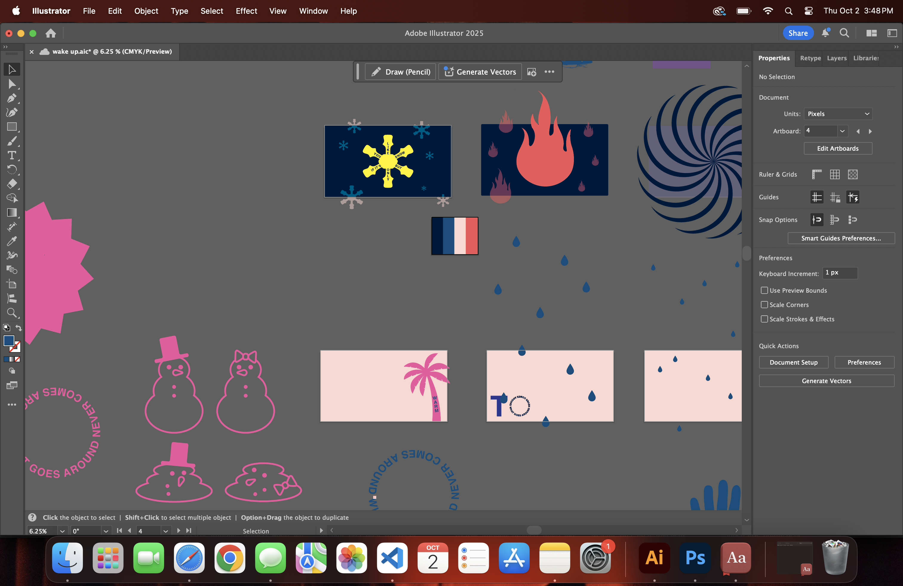

The final project for 4D design was coming up, and I needed ideas. I was listening to “Wake Up” by Alanis Morisette when all of a sudden a lightbulb appeared above my head. What if “what goes around never comes around” was a circle that transforms into the “O” in “to you”? I wrote all my ideas down, then organized them in a document like this so I could easily know which lyrics went with what visual.
I began playing around with different colors and fonts within Illustrator before working with After Effects. I wanted to make a good choice before I locked myself into a particular style. My first ideas were very clunky. The color palette was hard on the eyes, and the “melting snow turns into fire” concept for the first line felt too literal and obvious. I decided it would be best to keep an analogous color palette, and to use snowmen melting as a metaphor for the couple's struggles. That felt comparatively more entertaining.
Excluding some parts for time sake, this was my progress check. Inexperienced with After Effects at the time, I managed to teach myself a lot about making expressive movements in a very short amount of time. So while it didn’t seem like much, I just needed to flesh things out.
The final draft not only adds in the missing parts, but sharpens some movements and gives a lot of the assets more bounce and liveliness which the progress check was missing. The end section especially has a lot of very fine-tuned movements. For example, I needed the trees to wiggle in a very particular way that made it look like they were being blown around.